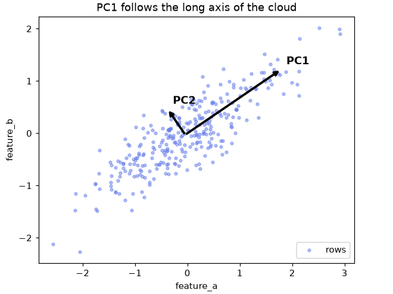
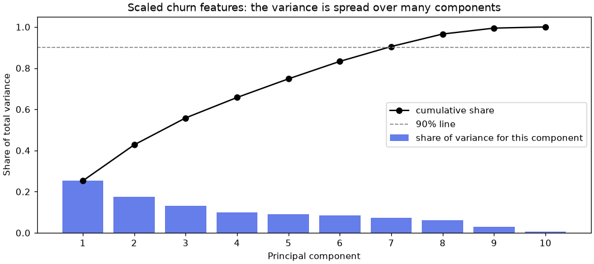
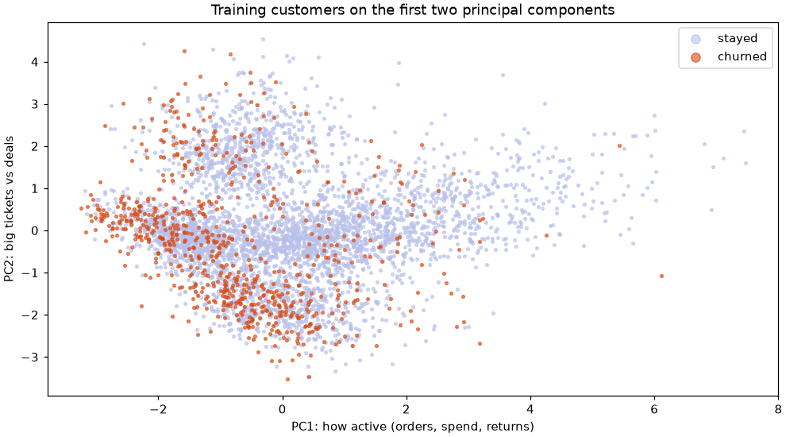
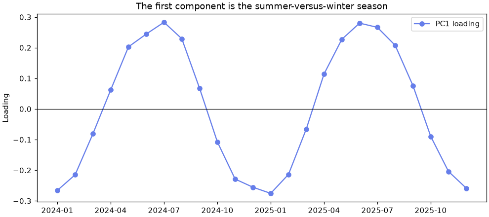
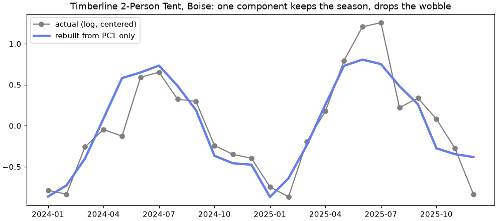

🧭 Lesson 9.1: Principal Component Analysis
Squeeze many correlated columns into a few new ones that keep most of the information, and learn to tell when that squeeze helps and when it quietly throws away the signal you care about.
🎯 Learning Objectives
By the end of this lesson, you will be able to:
- Explain what a principal component is: a direction of maximum spread, found without looking at any target
- Scale features before PCA and show what goes wrong when you do not
- Choose a number of components from
explained_variance_ratio_, a scree plot orn_components=0.90 - Read the loadings in
components_and describe each component in business words - Put PCA inside a
Pipelineand judge honestly, with cross-validation, whether it helps a model
In This Lesson
🔦 Too Many Columns, One Picture
Pinecrest's customer table has ten numeric behavior columns. You can plot any two of them against each other, but you cannot plot ten at once, and many of them say almost the same thing: a customer who orders often also spends more and returns more. Dimensionality reduction replaces many columns with a few new ones that keep as much of the information as possible. This module covers three ways to do it. This lesson is the oldest and most useful one: principal component analysis, or PCA.
💡 Mental Model: The Flashlight and the Shadow
Hold a hiking boot under a flashlight and look at its shadow on the wall. From the side, the shadow is clearly a boot: long, with a heel and a toe. From straight above the toe, the shadow is a small blob. Both shadows are flat, two-dimensional pictures of the same three-dimensional object, but one keeps far more of its shape.
PCA chooses the angle for you. It turns the data cloud until its shadow is as spread out as possible, because spread is where the differences between rows live. The first principal component is the direction of the widest shadow. The second is the widest direction left over, at a right angle to the first. And so on, until there are as many components as original columns.
Three facts to keep in mind from the start:
- PCA is unsupervised. It never looks at
churnedor any other target. It finds directions of spread, which may or may not be the directions that predict what you care about. You will see this matter later in the lesson. - Each component is a weighted mix of all the original columns. It is a new column, not a chosen subset of old ones. That makes PCA different from the feature selection of Lesson 2.4.
- It is linear. Components are straight-line directions. Curved structure needs the methods of Lesson 9.3.
🤔 Why This Matters
PCA shows up everywhere: to draw a wide table as a two-dimensional map, to compress images or sensor readings with hundreds of correlated columns, to remove noise, and as a first step before slower methods such as t-SNE. It is also easy to misuse, mainly by forgetting to scale and by assuming that "most of the variance" means "most of the useful information". This lesson shows both traps with real numbers.
📐 The Direction of Most Spread
Start with two columns, where you can see everything. The toy data below has two features that move together, like orders and spend. The seed makes the random numbers the same every time you run the cell, so your output matches the page.
import numpy as np
import pandas as pd
import matplotlib.pyplot as plt
from sklearn.decomposition import PCA
rng = np.random.default_rng(42)
a = rng.normal(0, 1, 300)
toy = pd.DataFrame({"feature_a": a, "feature_b": 0.6 * a + rng.normal(0, 0.35, 300)})
toy_pca = PCA(n_components=2).fit(toy)
print("components (one row per component):")
print(toy_pca.components_.round(3))
print("share of variance:", toy_pca.explained_variance_ratio_.round(3))Output
components (one row per component):
[[ 0.826 0.564]
[-0.564 0.826]]
share of variance: [0.932 0.068]Each row of components_ is a direction, written as a unit-length arrow in the original feature space. The first component points mostly along feature_a with a good share of feature_b: the diagonal along which the cloud is stretched. It alone accounts for the share of the total variance printed first. The second component is at a right angle to it and captures what is left.
scores = toy_pca.transform(toy)
print(scores[:3].round(3))
print("variance of each score column:", scores.var(axis=0, ddof=1).round(3))
print("explained_variance_: ", toy_pca.explained_variance_.round(3))
fig, ax = plt.subplots(figsize=(6, 4.5), layout="constrained")
ax.scatter(toy["feature_a"], toy["feature_b"], s=10, alpha=0.5, color="#667eea", label="rows")
center = toy_pca.mean_
for i, (vec, var) in enumerate(zip(toy_pca.components_, toy_pca.explained_variance_)):
end = center + vec * 2 * np.sqrt(var)
ax.annotate("", xy=end, xytext=center, arrowprops=dict(arrowstyle="->", lw=2.5, color="black"))
ax.text(*(end + 0.1), f"PC{i + 1}", fontsize=12, fontweight="bold")
ax.set_xlabel("feature_a")
ax.set_ylabel("feature_b")
ax.set_aspect("equal")
ax.set_title("PC1 follows the long axis of the cloud")
ax.legend(loc="lower right")
plt.show()Output
[[ 0.746 0.479]
[-1.463 -0.372]
[ 1.094 0.199]]
variance of each score column: [1.227 0.089]
explained_variance_: [1.227 0.089]
transform gives each row its scores: its coordinates along the new axes. The variance of the first score column equals explained_variance_ for the first component, which is what "the component explains this much variance" means. The two score columns are also uncorrelated, by construction.
💡 The One Formula Worth Knowing
After centering the data (subtracting each column's mean), the first component is the unit vector w that makes the variance of the projected values as large as possible: maximize Var(Xw) subject to |w| = 1. The answer is the top eigenvector of the covariance matrix, and its eigenvalue is the variance it explains. Each later component solves the same problem at a right angle to the earlier ones. scikit-learn computes all of this with a singular value decomposition (SVD), which is faster and more accurate than forming the covariance matrix, but the meaning is the same.
You can check the eigenvector claim in three lines of NumPy:
cov = np.cov(toy.to_numpy(), rowvar=False)
eigenvalues, eigenvectors = np.linalg.eigh(cov)
print("eigenvalues, largest first:", eigenvalues[::-1].round(3))
print("top eigenvector:", eigenvectors[:, -1].round(3))Output
eigenvalues, largest first: [1.227 0.089]
top eigenvector: [-0.826 -0.564]The eigenvalues match explained_variance_. The top eigenvector matches the first row of components_ up to its sign: an arrow and its exact opposite describe the same line, so PCA's signs are arbitrary. Never attach meaning to whether a component points "up" or "down", only to which features move together and which move in opposite directions.
⚖️ Scale First
Now the real data. Load the churn table, take the ten numeric columns from Lesson 1.1, and split exactly as in every earlier lesson. PCA is unsupervised, but the habit still applies: anything you will later use in a model is fitted on the training rows only.
from sklearn.model_selection import train_test_split
pd.set_option("display.width", 150)
customers = pd.read_csv("data/customers_churn.csv")
features = ["tenure_months", "orders_12m", "spend_12m", "avg_order_value", "days_since_last_order",
"returns_12m", "return_rate", "support_tickets_12m", "discount_share", "app_user"]
X = customers[features]
y = customers["churned"]
X_train, X_test, y_train, y_test = train_test_split(X, y, test_size=0.25, stratify=y, random_state=42)
raw_pca = PCA().fit(X_train)
print("share of variance, first three:", raw_pca.explained_variance_ratio_[:3].round(3))
print(pd.Series(raw_pca.components_[0], index=features).round(3))Output
share of variance, first three: [0.916 0.052 0.027]
tenure_months 0.006
orders_12m 0.004
spend_12m 0.991
avg_order_value 0.125
days_since_last_order -0.052
returns_12m 0.001
return_rate 0.000
support_tickets_12m 0.000
discount_share -0.000
app_user 0.000
dtype: float64The first component explains over 90% of the variance, which sounds wonderful until you read its weights: it is almost exactly spend_12m on its own. Spend is measured in dollars and varies by hundreds; discount_share is a fraction that varies by about 0.2. Variance depends on units, so the column with the biggest numbers wins, whatever its importance. PCA on unscaled data mostly tells you which column has the largest units.
from sklearn.preprocessing import StandardScaler
scaler = StandardScaler().set_output(transform="pandas")
X_train_s = scaler.fit_transform(X_train)
X_test_s = scaler.transform(X_test)
pca = PCA().fit(X_train_s)
print("share of variance:", pca.explained_variance_ratio_.round(3))Output
share of variance: [0.253 0.175 0.131 0.099 0.09 0.085 0.072 0.061 0.029 0.006]After scaling, every column starts with a variance of 1, so the components describe how the columns move together rather than how big their units are. The variance is now spread over many components, which is the honest picture: these ten columns are only partly redundant.
⚠️ When Not to Scale
Scale when columns are in different units, which is almost always true of business data. Skip scaling only when all columns share one unit and their size differences are meaningful, for example pixel brightness in an image or monthly sales of the same product. The project in this lesson is one of those cases, and you will see why.
📊 How Many Components?
There is no single correct number. Three common ways to choose, from looking to automatic:
ratios = pca.explained_variance_ratio_
cumulative = ratios.cumsum()
for k in range(1, 11):
print(f"PC{k:<2d} {ratios[k - 1]:.3f} cumulative {cumulative[k - 1]:.3f}")
fig, ax = plt.subplots(figsize=(9, 4), layout="constrained")
ks = np.arange(1, 11)
ax.bar(ks, ratios, color="#667eea", label="share of variance for this component")
ax.plot(ks, cumulative, "o-", color="black", label="cumulative share")
ax.axhline(0.90, color="gray", linestyle="--", linewidth=1, label="90% line")
ax.set_xticks(ks)
ax.set_xlabel("Principal component")
ax.set_ylabel("Share of total variance")
ax.set_title("Scaled churn features: the variance is spread over many components")
ax.legend(loc="center right")
plt.show()Output
PC1 0.253 cumulative 0.253
PC2 0.175 cumulative 0.427
PC3 0.131 cumulative 0.558
PC4 0.099 cumulative 0.657
PC5 0.090 cumulative 0.748
PC6 0.085 cumulative 0.833
PC7 0.072 cumulative 0.905
PC8 0.061 cumulative 0.966
PC9 0.029 cumulative 0.994
PC10 0.006 cumulative 1.000
- The elbow. Look for the point where the bars stop falling steeply. Many datasets show one; this one barely does, which tells you the columns carry fairly independent information.
- A variance target. Keep enough components to reach, say, 90% of the variance. Here that is seven out of ten: not much of a reduction.
- The last components. The tenth component explains well under 1%. A nearly empty component means one column is almost a combination of others. Here it is
avg_order_value, which isspend_12mdivided byorders_12m: not a straight-line combination, but close enough on scaled data that one direction is nearly empty.
scikit-learn can apply the variance target for you. Pass a number between 0 and 1 as n_components and PCA keeps the smallest number of components that reaches it:
pca90 = PCA(n_components=0.90).fit(X_train_s)
print("components kept:", pca90.n_components_)
print("variance kept: ", pca90.explained_variance_ratio_.sum().round(3))Output
components kept: 7
variance kept: 0.905✅ The Right Number Depends on the Job
For a picture, two (or three) components, and you accept losing whatever they miss. For compression, enough to reach a variance target. For a model, treat the number as a hyperparameter and pick it by cross-validation, as you will do in a moment. A variance target is a sensible default, not a law.
🔍 Reading the Components
The weights in components_ are often called loadings. Put the first three in a table with the feature names, and read each column for its large weights (positive or negative):
loadings = pd.DataFrame(pca.components_[:3].T, index=features, columns=["PC1", "PC2", "PC3"])
print(loadings.round(2))Output
PC1 PC2 PC3
tenure_months 0.08 -0.01 -0.24
orders_12m 0.45 -0.17 -0.41
spend_12m 0.46 0.41 -0.22
avg_order_value -0.01 0.65 0.03
days_since_last_order -0.31 0.18 0.35
returns_12m 0.47 0.04 0.42
return_rate 0.40 0.07 0.56
support_tickets_12m 0.27 -0.23 0.13
discount_share 0.02 -0.52 0.22
app_user 0.18 -0.12 -0.21Reading the large weights:
- PC1, "how active": orders, spend, returns and return rate all load positively, with
days_since_last_ordernegative. A high PC1 score is a busy, recent customer who also sends more back. - PC2, "big tickets versus deals":
avg_order_valueand spend positive,discount_sharestrongly negative. High scores buy expensive items at full price; low scores hunt for discounts. - PC3, "returns, not orders": return rate and returns positive, orders negative. It separates customers who return a lot relative to how much they buy.
⚠️ Names Are Your Interpretation
"How active" is a label you chose after reading the weights; PCA knows nothing about it. Components can mix unrelated features, especially the later ones, and the signs can flip between runs or library versions (multiply a component and its scores by -1 and nothing changes). Describe a component by its biggest weights and do not over-read the small ones.
🗺️ A Two-Dimensional Customer Map
The first two components keep about 43% of the variance of ten columns. That is enough to draw every customer as a dot and see whether the churners sit somewhere special.
pca2 = PCA(n_components=2).fit(X_train_s)
map_train = pd.DataFrame(pca2.transform(X_train_s), columns=["PC1", "PC2"], index=X_train_s.index)
map_train["churned"] = y_train
print(map_train.groupby("churned")[["PC1", "PC2"]].mean().round(2))
fig, ax = plt.subplots(figsize=(9, 5), layout="constrained")
for value, label, color in [(0, "stayed", "#b8c0ea"), (1, "churned", "#d9480f")]:
part = map_train[map_train["churned"] == value]
ax.scatter(part["PC1"], part["PC2"], s=6, alpha=0.6, color=color, label=label)
ax.set_xlabel("PC1: how active (orders, spend, returns)")
ax.set_ylabel("PC2: big tickets vs deals")
ax.set_title("Training customers on the first two principal components")
ax.legend(markerscale=3)
plt.show()Output
PC1 PC2
churned
0 0.14 0.06
1 -0.72 -0.28
The averages confirm a lean: churners sit lower on PC1 (less active) and lower on PC2 (more discount-driven). But the picture shows heavy overlap. The biggest sources of variation among customers are not the same as the signal for churn. Keep that in mind for the next section, and for Lesson 9.2, which finds directions that separate classes on purpose.
⚙️ PCA Before a Model
A common recipe says "reduce dimensions with PCA, then train". Test it instead of trusting it. Put the scaler, PCA and logistic regression in one Pipeline (so every cross-validation fold fits its own scaler and PCA on its own training part, with no leakage), and compare ROC AUC for different numbers of components with the model that uses all ten scaled columns.
from sklearn.pipeline import make_pipeline
from sklearn.linear_model import LogisticRegression
from sklearn.model_selection import cross_val_score, StratifiedKFold
cv = StratifiedKFold(n_splits=5, shuffle=True, random_state=42)
for k in [2, 4, 6, 8, 9]:
pipe = make_pipeline(StandardScaler(), PCA(n_components=k), LogisticRegression())
auc = cross_val_score(pipe, X_train, y_train, cv=cv, scoring="roc_auc")
print(f"PCA {k:2d} components AUC {auc.mean():.3f} +/- {auc.std():.3f}")
no_pca = make_pipeline(StandardScaler(), LogisticRegression())
auc = cross_val_score(no_pca, X_train, y_train, cv=cv, scoring="roc_auc")
print(f"no PCA (10 columns) AUC {auc.mean():.3f} +/- {auc.std():.3f}")Output
PCA 2 components AUC 0.687 +/- 0.014
PCA 4 components AUC 0.786 +/- 0.028
PCA 6 components AUC 0.812 +/- 0.025
PCA 8 components AUC 0.829 +/- 0.025
PCA 9 components AUC 0.829 +/- 0.025
no PCA (10 columns) AUC 0.829 +/- 0.025Two components give a much weaker model, and you need eight or nine of the ten to match plain logistic regression. Why? The strongest churn signal is days_since_last_order (Lesson 1.1's largest coefficient), and PCA spreads it thinly over several components because it is not where most of the variance is. PCA ranks directions by spread, not by usefulness, and it never saw the target.
💡 When PCA Before a Model Does Help
- Many strongly correlated columns: pixels, sensor channels, word counts, survey items. There the first components carry most of the signal and the rest is noise.
- Speed: a slow model (kernel SVM, k-nearest neighbors, t-SNE) on 50 components instead of 784 pixels.
- Collinearity: a linear model whose coefficients jump around because columns are nearly copies; components are uncorrelated by construction.
With ten business columns that each mean something, PCA usually costs accuracy and interpretability. Feature selection (Lesson 2.4) or regularization (Lesson 3.2) are better first tools there.
🗜️ Compression, Reconstruction and Anomalies
PCA can run backward. inverse_transform turns scores back into the original columns, using only the components you kept. The difference between a row and its reconstruction is what those components could not express. Measure it on the test customers, which the PCA never saw:
for k in [2, 5, 7, 9, 10]:
model_k = PCA(n_components=k).fit(X_train_s)
rebuilt = model_k.inverse_transform(model_k.transform(X_test_s))
rmse = np.sqrt(((X_test_s.to_numpy() - rebuilt) ** 2).mean())
print(f"{k:2d} components storage {k / 10:.0%} of the columns reconstruction RMSE {rmse:.3f}")Output
2 components storage 20% of the columns reconstruction RMSE 0.765
5 components storage 50% of the columns reconstruction RMSE 0.509
7 components storage 70% of the columns reconstruction RMSE 0.313
9 components storage 90% of the columns reconstruction RMSE 0.081
10 components storage 100% of the columns reconstruction RMSE 0.000The error is in standard deviations, because the data were scaled. With nine components the error is already small: the tenth direction is the near-copy found earlier. With all ten it is zero up to floating-point rounding, because ten components are just a rotation of ten columns. This is the idea behind PCA compression of images and signals, and behind PCA-based anomaly detection.
🚨 Reconstruction Error as an Anomaly Score
Lesson 8.6 promised to come back to this idea. A PCA fitted on normal-looking history learns the directions most rows share; a new row whose reconstruction error is large breaks those patterns. Try it on 8.6's fraud setup: fit on January to May payments (no labels used), score June, and judge the score exactly as 8.6 did, with ROC AUC, average precision and the number of frauds in a review queue of 165 payments (2% of June).
from sklearn.metrics import roc_auc_score, average_precision_score
tx = pd.read_csv("data/transactions.csv", parse_dates=["timestamp"])
tx_train = tx[tx["timestamp"] < "2025-06-01"]
tx_june = tx[tx["timestamp"] >= "2025-06-01"]
fraud = tx_june["is_fraud"].to_numpy()
budget = round(0.02 * len(tx_june))
tx_numeric = ["account_age_days", "amount", "hour", "items", "device_new", "billing_shipping_mismatch",
"country_mismatch", "card_attempts", "velocity_24h"]
recon = make_pipeline(StandardScaler(), PCA(n_components=4)).fit(tx_train[tx_numeric])
june_scaled = recon[0].transform(tx_june[tx_numeric])
june_rebuilt = recon[1].inverse_transform(recon[1].transform(june_scaled))
error = ((june_scaled - june_rebuilt) ** 2).sum(axis=1)
queue = np.argsort(-error)[:budget]
print(f"PCA keeps {recon[1].explained_variance_ratio_.sum():.0%} of the training variance")
print(f"reconstruction error AUC {roc_auc_score(fraud, error):.3f} AP {average_precision_score(fraud, error):.3f}"
f" caught {fraud[queue].sum()} of {fraud.sum()} in the top {budget}")Output
PCA keeps 51% of the training variance
reconstruction error AUC 0.819 AP 0.074 caught 19 of 64 in the top 165The score works (an AUC of about 0.82 from a method that never saw a label, and 19 frauds in a queue where a random pick would find about one), but its average precision of 0.07 shows that its top ranks are much less pure than those of Lesson 8.6's Isolation Forest (AUC 0.848, average precision 0.376, 32 of 64 caught) and even of the one-column velocity rule (26 caught). That is an honest and useful result. Reconstruction error flags payments that break the correlations most payments share. Much of this fraud is instead extreme on a few columns (many recent orders, a brand-new account, several card attempts), which Isolation Forest isolates directly. PCA-based detection shines when normal data has strong correlated structure, as in sensor readings, images or the monthly sales of the project below, and a broken correlation is the anomaly.
✅ What You Can Now Do
You can fit PCA on scaled data, choose a number of components, name them from their loadings, draw a map, test PCA inside a pipeline, and measure what it loses. Next come the mistakes people make, then a project where PCA really shines: many columns in the same unit that move together.
⚠️ Common Mistakes
1. Asking for More Components Than You Have
PCA(n_components=12).fit(X_train_s)Error
ValueError: n_components=12 must be between 0 and min(n_samples, n_features)=10 with svd_solver='covariance_eigh'What it means: there can be at most as many components as the smaller of the number of rows and the number of columns; ten columns give at most ten directions. Fix: use a smaller integer, a fraction such as 0.90, or leave n_components out to keep them all.
2. Missing Values
PCA(n_components=2).fit(customers[["tenure_months", "email_opens_90d"]])Error
ValueError: Input X contains NaN.
PCA does not accept missing values encoded as NaN natively. For supervised learning, you might want to consider sklearn.ensemble.HistGradientBoostingClassifier and Regressor which accept missing values encoded as NaNs natively. Alternatively, it is possible to preprocess the data, for instance by using an imputer transformer in a pipeline or drop samples with missing values. See https://scikit-learn.org/stable/modules/impute.html You can find a list of all estimators that handle NaN values at the following page: https://scikit-learn.org/stable/modules/impute.html#estimators-that-handle-nan-valuesWhat it means: PCA computes means and variances, which are undefined with gaps; email_opens_90d has 537 missing values. Fix: put a SimpleImputer before the scaler in the pipeline (Lesson 2.1).
3. Forgetting to Scale
unscaled = make_pipeline(PCA(n_components=4), LogisticRegression(max_iter=1000))
scaled = make_pipeline(StandardScaler(), PCA(n_components=4), LogisticRegression())
for name, pipe in [("PCA without scaling", unscaled), ("PCA after scaling", scaled)]:
auc = cross_val_score(pipe, X_train, y_train, cv=cv, scoring="roc_auc").mean()
print(f"{name:20s} AUC {auc:.3f}")Output (no error, and that is the problem)
PCA without scaling AUC 0.759
PCA after scaling AUC 0.786What happened: nothing complains, but without scaling the four components are simply the four columns with the largest units (spend, average order value, days since last order, tenure), chosen for the size of their numbers rather than their meaning, and the AUC drops. Small-unit columns such as discount_share, the second-strongest churn signal, never make it in. The loadings are meaningless too. Fix: StandardScaler before PCA whenever columns have different units.
4. Fitting PCA on All the Data Before Splitting
leaky_pca = PCA(n_components=4).fit(StandardScaler().fit_transform(X))
print("fitted on", leaky_pca.n_samples_, "rows, including the 1,500 test customers")Output (no error, and that is the problem)
fitted on 6000 rows, including the 1,500 test customersWhat happened: the scaler and the components were learned with the test rows included, so any score you compute on those rows later is slightly optimistic. PCA ignores the target, so the leak is small, but it is the same mistake as fitting a scaler on test data in Lesson 1.1, and with supervised reducers (Lesson 9.2) it becomes large. Fix: put PCA inside the pipeline, as in the cross-validation loop above. The exception is a purely descriptive analysis with no model to evaluate, such as the project below.
🛠️ Project: Seasonal Fingerprints
Pinecrest's planners want to know which products are "summer" products and which are "winter" products, store by store, without staring at 96 sales charts. Each product-and-store history has 24 monthly averages, so the data is a table of 96 rows and 24 columns, all in the same unit and strongly correlated (neighboring months look alike). That is PCA's home ground. Work in a new notebook called lesson_9_1_project. Allow about 45 minutes.
🛠️ Step 1: Build one row per product and store (10 min)
Average the weekly units into months, then pivot so that each product-and-store pair is a row and each month a column.
import numpy as np
import pandas as pd
import matplotlib.pyplot as plt
from sklearn.decomposition import PCA
demand = pd.read_csv("data/weekly_demand.csv", parse_dates=["week_start"])
demand["month"] = demand["week_start"].dt.strftime("%Y-%m")
monthly = demand.pivot_table(index=["product_id", "store"], columns="month",
values="units_sold", aggfunc="mean")
print(monthly.shape)
print(monthly.iloc[:3, :6].round(1))Output
(96, 24)
month 2024-01 2024-02 2024-03 2024-04 2024-05 2024-06
product_id store
ACC-2001 Asheville 24.6 25.0 39.8 30.8 37.2 34.2
Bend 26.0 27.5 23.5 32.4 49.5 49.0
Boise 24.4 23.8 50.0 41.4 30.0 38.5🛠️ Step 2: Keep the shape, remove the size (5 min)
Socks sell far more units than tents. If you fed raw units to PCA, the first component would mostly say "this product sells a lot". You care about the shape of the year, so take log1p (so that a 50% summer rise counts the same for a slow product as for a fast one) and subtract each row's own mean. Do not standardize the columns: every column is the same unit, and a month with bigger swings should count more.
shape = np.log1p(monthly)
shape = shape.sub(shape.mean(axis=1), axis=0)
print(shape.mean(axis=1).abs().max().round(6))
print(shape.loc["TNT-2001"].iloc[:, [0, 6]].round(2))Output
0.0
month 2024-01 2024-07
store
Asheville -0.93 0.77
Bend -0.81 1.03
Boise -0.79 0.65
Flagstaff -0.86 0.93Every row now averages zero. The Timberline 2-Person Tent sits well below its own average in January and well above it in July, at every store.
🛠️ Step 3: Fit PCA and look at the variance (5 min)
This is a descriptive analysis of all 96 histories with no target and no model to evaluate, so you fit on everything.
season_pca = PCA(random_state=42).fit(shape)
print("first six shares:", season_pca.explained_variance_ratio_[:6].round(3))Output
first six shares: [0.799 0.019 0.018 0.018 0.015 0.014]One component explains about 80% of how the 96 sales histories differ in shape. Every later component explains around 2%, about the same each: that flat tail is what noise looks like. These histories have one dominant pattern plus random wobble.
🛠️ Step 4: Draw the first component (10 min)
Here a component is a curve over 24 months, so plot it as one.
pc1 = pd.Series(season_pca.components_[0], index=shape.columns)
print(pc1.iloc[:12].round(2).to_string())
fig, ax = plt.subplots(figsize=(9, 4), layout="constrained")
ax.plot(range(24), pc1.to_numpy(), "o-", color="#667eea", label="PC1 loading")
ax.axhline(0, color="black", linewidth=0.8)
ax.set_xticks(range(0, 24, 3))
ax.set_xticklabels(pc1.index[::3])
ax.set_ylabel("Loading")
ax.set_title("The first component is the summer-versus-winter season")
ax.legend()
plt.show()Output
month
2024-01 -0.27
2024-02 -0.21
2024-03 -0.08
2024-04 0.06
2024-05 0.20
2024-06 0.24
2024-07 0.28
2024-08 0.23
2024-09 0.07
2024-10 -0.11
2024-11 -0.23
2024-12 -0.26
PCA was never told which column is which month. It found a smooth yearly wave because that is the pattern the histories share. Remember that the sign is arbitrary: here positive means "summer", but another run could flip it.
🛠️ Step 5: Give every product a seasonal score (10 min)
A row's score on PC1 says how strongly its year follows the summer wave (positive) or the opposite, winter wave (negative). Average the four stores per product and attach the product names.
scores = pd.DataFrame({"season_score": season_pca.transform(shape)[:, 0]}, index=shape.index)
names = demand.groupby("product_id")[["product_name", "category"]].first()
by_product = scores.groupby(level="product_id")["season_score"].mean().to_frame().join(names)
by_product = by_product.sort_values("season_score")
print(by_product.head(4).round(2))
print(by_product.tail(4).round(2))
print(by_product.groupby("category")["season_score"].mean().sort_values().round(2))Output
season_score product_name category
product_id
SNW-2002 -6.79 Solstice Snow Goggles Snow
SNW-2001 -6.36 Tundra Snowshoes Snow
APL-2001 -1.79 Alpenglow Rain Jacket Apparel
APL-2002 -1.69 Ember Fleece Pullover Apparel
season_score product_name category
product_id
SLP-2001 1.84 Cascade 20F Sleeping Bag Sleeping
TNT-2002 1.97 Basecamp 4-Person Tent Tents
TNT-2001 2.07 Timberline 2-Person Tent Tents
TNT-2003 2.21 Drift Ultralight Tarp Tents
category
Snow -6.58
Apparel -1.68
Footwear 0.21
Accessories 0.29
Packs 0.89
Climbing 1.13
Camp Kitchen 1.54
Sleeping 1.72
Tents 2.08
Name: season_score, dtype: float64Snow gear is the most extreme winter product by far, Apparel (jackets, fleece, and in this data even the sun hat) leans to the cold months, and tents, the tarp, sleeping gear and camp kitchen are the summer products. One number per product now sorts the whole catalog by season.
🛠️ Step 6: Denoise one history and save the scores (5 min)
Rebuild one sales history from the first component alone. What remains is the shared seasonal shape, without the month-to-month noise. Then save the scores for the planners.
one = PCA(n_components=1).fit(shape)
smooth = pd.DataFrame(one.inverse_transform(one.transform(shape)), index=shape.index, columns=shape.columns)
row = ("TNT-2001", "Boise")
noise = (shape.loc[row] - smooth.loc[row]).abs().mean()
print(f"mean absolute gap between the history and its 1-component version: {noise:.3f} log units")
fig, ax = plt.subplots(figsize=(9, 4), layout="constrained")
ax.plot(range(24), shape.loc[row].to_numpy(), "o-", color="gray", label="actual (log, centered)")
ax.plot(range(24), smooth.loc[row].to_numpy(), "-", color="#667eea", linewidth=3, label="rebuilt from PC1 only")
ax.set_xticks(range(0, 24, 3))
ax.set_xticklabels(shape.columns[::3])
ax.set_title("Timberline 2-Person Tent, Boise: one component keeps the season, drops the wobble")
ax.legend()
plt.show()
by_product.round(3).to_csv("seasonal_scores.csv")
print("saved", len(by_product), "products")Output
mean absolute gap between the history and its 1-component version: 0.189 log units
saved 24 products
✅ Project Completion Checklist
- Your table has 96 rows (24 products times 4 stores) and 24 month columns
- You took
log1pand removed each row's mean, and you can say why you did not standardize the columns - The first component explains about 80% of the variance and the later ones about 2% each
- Your PC1 chart shows a yearly wave, and you can explain why its sign is arbitrary
- Snow and Apparel products score on the winter side; tents and sleeping gear on the summer side
seasonal_scores.csvholds one score per product
🏋️ Hands-on Exercises
Exercises 1 to 3 use the churn variables from the lesson (X_train_s, X_test_s, pca, features); the stretch exercise loads its own data.
🏋️ Exercise 1: PCA by Hand with SVD
Center X_train_s (it is already centered, but do it anyway), compute np.linalg.svd(centered, full_matrices=False), and turn the singular values s into explained-variance ratios with s**2 / (s**2).sum(). Check with np.allclose that they match pca.explained_variance_ratio_, and that the first row of Vt matches pca.components_[0] up to sign.
💡 Hint
To compare up to sign, compare absolute values, or compare both Vt[0] and -Vt[0].
✅ Solution
centered = X_train_s.to_numpy() - X_train_s.to_numpy().mean(axis=0)
U, s, Vt = np.linalg.svd(centered, full_matrices=False)
ratios_by_hand = s**2 / (s**2).sum()
print(np.allclose(ratios_by_hand, pca.explained_variance_ratio_))
print(np.allclose(np.abs(Vt[0]), np.abs(pca.components_[0])))Output
True
TrueThat is all PCA is: an SVD of the centered data. The squared singular values are proportional to the variance along each direction, and the rows of Vt are the directions.
🏋️ Exercise 2: How Many for 95%?
Using the fitted pca, find the smallest number of components whose cumulative share reaches 95% with np.searchsorted, then confirm with PCA(n_components=0.95). Is that a useful reduction for these ten columns?
💡 Hint
np.searchsorted(cumulative, 0.95) returns a zero-based position; add 1 to get a count.
✅ Solution
cum = pca.explained_variance_ratio_.cumsum()
print("by hand:", np.searchsorted(cum, 0.95) + 1)
print("by PCA: ", PCA(n_components=0.95).fit(X_train_s).n_components_)Output
by hand: 8
by PCA: 8Eight of ten columns to keep 95%: hardly a reduction. These business columns are not redundant enough for PCA to compress them much, which agrees with the flat scree plot.
🏋️ Exercise 3: A Segment Map
Lesson 8.2 found customer segments in four behavior columns: orders_12m, avg_order_value, discount_share and return_rate. Scale those four for all 6,000 customers, run KMeans(n_clusters=5, n_init=10, random_state=42), and project the scaled data onto two principal components. Print the share of variance the map keeps and the mean PC1 and PC2 of each cluster. Optionally scatter the map colored by cluster.
💡 Hint
Fit K-Means on the four scaled columns, not on the two components. The map is only for looking; the clustering uses all the information.
✅ Solution
from sklearn.cluster import KMeans
seg_cols = ["orders_12m", "avg_order_value", "discount_share", "return_rate"]
seg_scaled = StandardScaler().fit_transform(customers[seg_cols])
clusters = KMeans(n_clusters=5, n_init=10, random_state=42).fit_predict(seg_scaled)
seg_pca = PCA(n_components=2).fit(seg_scaled)
seg_map = pd.DataFrame(seg_pca.transform(seg_scaled), columns=["PC1", "PC2"])
seg_map["cluster"] = clusters
print("variance kept:", seg_pca.explained_variance_ratio_.sum().round(3))
print(seg_map.groupby("cluster")[["PC1", "PC2"]].mean().round(2))Output
variance kept: 0.632
PC1 PC2
cluster
0 -0.24 2.03
1 0.43 -0.59
2 -0.64 0.13
3 -1.40 -0.68
4 2.01 -0.06Two components of four keep about 63% of the variance, and the cluster centers land in different places on the map, but clusters 1 and 2 sit fairly close together in these two directions. They differ along the components the map left out. A PCA map is a fair first look; Lesson 9.3 shows embeddings that separate such groups more clearly, with their own caveats.
🏋️ Exercise 4: Eigen-Clothes (Stretch)
Load the Fashion-MNIST training images with torchvision (Lesson 10.3 uses them too; the first download is about 26 MB), flatten the first 3,000 to rows of 784 pixel values between 0 and 1, and fit PCA(n_components=150, random_state=42) without scaling (all pixels share one unit). How many components keep 90% of the variance? Rebuild the first image from its first 10, 50 and 150 components (scores times components, plus mean_) and print the reconstruction RMSE of each. Optionally show the images side by side with imshow.
💡 Hint
datasets.FashionMNIST("data", train=True, download=True).data is a tensor of shape (60000, 28, 28) with values 0 to 255. .numpy()[:3000].reshape(3000, -1) / 255 gives the table.
✅ Solution
from torchvision import datasets
fashion = datasets.FashionMNIST("data", train=True, download=True)
pixels = fashion.data.numpy()[:3000].reshape(3000, -1) / 255
img_pca = PCA(n_components=150, random_state=42).fit(pixels)
cum = img_pca.explained_variance_ratio_.cumsum()
print("components for 90%:", np.searchsorted(cum, 0.90) + 1, "of 784")
first_scores = img_pca.transform(pixels[:1])
for k in [10, 50, 150]:
rebuilt = first_scores[:, :k] @ img_pca.components_[:k] + img_pca.mean_
print(f"{k:3d} components RMSE {np.sqrt(((pixels[:1] - rebuilt) ** 2).mean()):.3f}")Output
components for 90%: 76 of 784
10 components RMSE 0.172
50 components RMSE 0.121
150 components RMSE 0.078Fitting only 150 components is much faster than all 784, and explained_variance_ratio_ is still a share of the total variance, so the count is correct. Here PCA compresses dramatically: a small fraction of the 784 pixel columns keeps 90% of the variance, because neighboring pixels are highly correlated. Compare that with the churn table, where eight of ten columns were needed for 95%. PCA's value depends on how redundant the columns are.
🎯 Quick Quiz
🎯 Check Your Understanding
Question 1: You run PCA on unscaled churn features and PC1 explains 92% of the variance. What is the most likely explanation?
Question 2: What does this print?
quiz_data = pd.DataFrame({"a": [1.0, 2.0, 3.0, 4.0], "b": [2.0, 4.0, 6.0, 8.0]})
quiz_pca = PCA().fit(quiz_data)
print(quiz_pca.explained_variance_ratio_.round(2))Question 3: In this lesson, logistic regression on the first two principal components scored a clearly lower AUC than on all ten scaled columns. Why?
Question 4: Yesterday PC1's loading for orders_12m was +0.45; after updating a library it is -0.45, and every other loading flipped sign too. What should you conclude?
Question 5: In the project, why were the monthly sales columns not standardized before PCA?
❓ Common Questions at This Stage
Is PCA a kind of feature selection?
No. Feature selection (Lesson 2.4) keeps some original columns and drops the rest, so the model still speaks in business terms. PCA builds new columns, each a mix of all the old ones, and you still need every original column to compute them. If you want fewer columns to collect or explain, use selection; if you want a compact, decorrelated description, use PCA.
Can I use PCA on categorical columns?
Technically you can run it on one-hot columns, and it will produce something, but variance of 0/1 indicators is a poor measure of similarity. For mixed tables, scale the numeric columns and either leave the categories out of the PCA or use methods designed for categories (multiple correspondence analysis, outside scikit-learn). For sparse text matrices, TruncatedSVD is the PCA-like tool (it skips centering, which would destroy sparsity); Lesson 11.2 uses it for recommendations.
What about very large data, or curved structure?
scikit-learn has IncrementalPCA for data that does not fit in memory (it learns in batches with partial_fit), PCA(svd_solver="randomized") for wide data when you only want the first few components, and KernelPCA for curved structure. For pictures of curved structure, the next-but-one lesson's t-SNE and UMAP are usually more useful.
What does whiten=True do?
It divides each score column by its standard deviation, so every component comes out with variance 1. Some models that assume equal-variance inputs like it. It also amplifies the low-variance, often noisy, components, so only use it when a later step benefits and cross-validation agrees.
🌟 Going Further: Bonus Challenge
Use PCA reconstruction error on the churn table instead of payments. Fit a scaler and PCA(n_components=5) on the training customers, compute each test customer's reconstruction error (mean squared difference between the scaled row and its rebuilt version), and list the ten customers with the largest errors. Look at their raw values: what makes them unusual? Then compare the ranking with an IsolationForest from Lesson 8.6 using a rank correlation (scipy.stats.spearmanr). Do the two methods agree on who is strange?
📓 Learning Journal
Take five minutes to write in your learning journal (the journal.md file you started in Lesson 0.1, or a paper notebook). Jot down:
- Key concepts you learned today
- Techniques that clicked (and the ones that have not, yet)
- Questions or confusion to come back to
- Ideas to try on your own
- Progress and feelings: how did this lesson go for you?
✍️ This lesson's prompt: PCA compressed 24 months of sales into one number per product almost perfectly, but it could not compress ten churn columns without losing the churn signal. Write down, in your own words, what was different about the two tables. Then name one dataset from your own work or life where you would expect PCA to compress well, and one where you would not.
📝 Lesson Summary
🎓 Key Takeaways
- PCA finds uncorrelated directions of maximum variance, ordered by how much variance each explains; it never looks at a target
- Each component is a weighted mix of all the original columns; the weights (
components_) are its loadings, and their sign is arbitrary - Scale columns measured in different units first, or the largest units take over; do not standardize columns that share one meaningful unit
- Choose the number of components from the scree plot, a variance target (
n_components=0.90) or, for a model, cross-validation - High variance is not the same as useful: on the churn data, two components lost much of the signal, and eight of ten were needed to match the full model
- PCA shines when many columns move together (monthly sales, pixels, sensors), and
inverse_transformturns it into a compressor, a denoiser and an anomaly score (weaker than Isolation Forest on Pinecrest's fraud data) - Inside a
Pipeline, PCA is refitted in each fold and cannot leak
🏆 What You've Accomplished
- You found principal components by hand and with scikit-learn, and checked that they are eigenvectors of the covariance matrix
- You saw unscaled PCA collapse onto a single column, and fixed it
- You named the main components of Pinecrest's customer behavior from their loadings
- You tested the "PCA, then model" recipe with cross-validation instead of trusting it
- You turned 96 sales histories into seasonal fingerprints that sort the catalog from winter to summer
🔭 Looking Ahead
In Lesson 9.2: Linear Discriminant Analysis you will fix the weakness you met today. LDA also finds straight-line directions, but it uses the labels to find the ones that separate classes, which turns out to be exactly the churn signal PCA missed. It also doubles as a fast, surprisingly strong classifier.
📋 Before the Next Lesson
- Rerun the project with weekly instead of monthly averages. How much variance does PC1 explain now, and why is it lower?
- Look again at the customer map. Predict: if a method were allowed to use the churn labels, along which original column would its single direction lean most?
- Write your journal entry while the flashlight picture is fresh.
🌱 Encouragement for the Journey
You did more than run PCA today: you questioned it. You saw it compress beautifully and you saw it throw away the signal, and you can now explain both with numbers. That habit of testing a famous recipe instead of reciting it is exactly what makes your machine learning trustworthy. If loadings and eigenvectors still feel slippery, that is normal; they settle with use, and you will use them again in the next two lessons.